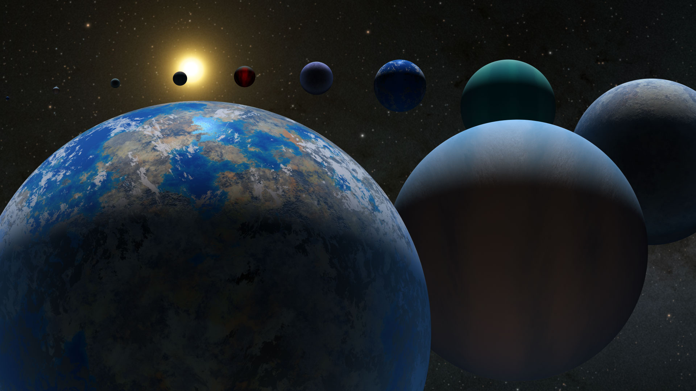

- Exoplanets Home
Exoplanets
| Exoplanet Types | |||
|---|---|---|---|
| Relative Size | Composition | Number Found | |
| Terrestrial | Earth Sized or Smaller | Rock and Metals | 192 |
| Super-Earth | Smaller than Neptune, Larger than Earth | Rocky | 1593 |
| Neptune-Like | Smaller than Neptune, Larger than Earth | Gaseous Composition | 1813 |
| Gas Giant | Size similar to Saturn or Jupiter | Gaseous | 1617 |
Total Found/Confirmed: 5,220
Planetary Systems Confirmed: 3,907
The planets beyond our solar system are called “exoplanets,” and they come in a wide variety of sizes, from gas giants larger than Jupiter to small, rocky planets about as big around as Earth or Mars. They can be hot enough to boil metal or locked in a deep freeze. They can orbit their stars so tightly that a “year” lasts only a few days; they can orbit two suns at once. Some exoplanets are sunless rogues, wandering through the galaxy in permanent darkness.
The first exoplanets were discovered in the early 1990s, but the first exoplanet to burst upon the world stage was 51 Pegasi b, a “hot Jupiter” orbiting a Sun-like star 50 light-years away. The watershed year was 1995. Since then we’ve discovered thousands more.
Size and mass play a crucial role in determining planet types. There are also varieties within the size/mass classifications. Scientists also have noted what seems to be a strange gap in planet sizes. It’s been dubbed the “radius valley,” or the Fulton gap, after Benjamin Fulton, lead author on a paper describing it. Data from NASA’s Kepler spacecraft showed that planets of a certain size-range are rare – those between 1.5 and 2 times the size (diameter) of Earth, which would place them among the super-Earths. It’s possible that this represents a critical size in planet formation: Planets that reach this size quickly attract thick atmospheres of hydrogen and helium gas, and balloon up into gaseous planets, while planets smaller than this limit are not large enough to hold such an atmosphere and remain primarily rocky, terrestrial bodies. On the other hand, the smaller planets that orbit close to their stars could be the cores of Neptune-like worlds that had their atmospheres stripped away.
Planet Types
Terrestrial
Terrestrial are Earth sized and smaller, composed of rock, silicate, water or carbon. Further investigation will determine whether some of them possess atmospheres, oceans or other signs of habitability.
Super-Earth
Super-Earth are typically terrestrial planets that may or may not have atmospheres. They are more massive than Earth, but lighter than Neptune.
Neptune-Like
Neptune-Like are similar in size to Neptune or Uranus in our solar system. They likely have a mixture of interior compositions, but all will have hydrogen and helium-dominated outer atmospheres and rocky cores. We’re also discovering mini-Neptunes, planets smaller than Neptune and bigger than Earth. No planets of this size or type exist in our solar system.
Gas Giant
Gas Giants are planets the size of Saturn or Jupiter, the largest planet in our solar system, or much, much larger. More variety is hidden within these broad categories. Hot Jupiters, for instance, were among the first planet types found – gas giants orbiting so closely to their stars that their temperatures soar into the thousands of degrees (Fahrenheit or Celsius).